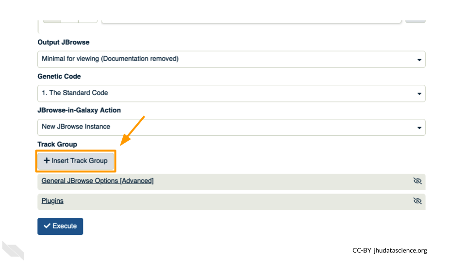

8.5 Exercise Three: Viewing aligned data
We have aligned our data but it is currently a table of where the reads align. This is hard to read, so we will use JBrowse to view the data.
Go to STATISTICS AND VISUALIZATION: Graph/Display Data and select “JBrowse”. Under “Reference genome to display” ensure that “Use a genome from history” is selected. Below this, make sure that the SARS-CoV-2_reference_genome.fasta file is selected. Click “Execute”.
, reference genome (set to \"SARS-CoV-2_reference_genome.fasta\"), and the \"Execute\" button.")
You should see a new JBrowse item appear in your history. Click the eye icon ( ) to open JBrowse. You will need to click on the magnifying glasses to zoom in, but you should see the A,C,G, and Ts and their corresponding colors that make up the SARS-CoV-2 genome!
) to open JBrowse. You will need to click on the magnifying glasses to zoom in, but you should see the A,C,G, and Ts and their corresponding colors that make up the SARS-CoV-2 genome!

This is interesting, but it doesn’t let us compare the genome to the sample we have. We suspect there may be some differences that indicate our sample is the delta variant. Go back to STATISTICS AND VISUALIZATION: Graph/Display Data and select “JBrowse”. Just like before, under “Reference genome to display”, ensure that “Use a genome from history” is selected. Below this, make sure that the SARS-CoV-2_reference_genome.fasta file is selected.
This time, we’ll add our alignment data from Exercise Two. Click the “+ Insert Track Group” button.

Click “+ Insert Annotation Track” to add our alignment data.

You’ll keep everything the same except the following:
- Track Type: BAM Pileups
- Autogenerate SNP Track: Yes
- Maximum size of BAM chunks: Add one more zero: 50000000
, Autogenerate SNP Track (set to \"Yes\"), and Maximum size of BAM chunks (set to 50000000).")
These arguments tell JBrowse what kind of data we are using, as well as some memory options. Click “Execute”.
You should see a new JBrowse item appear in your history. Click the eye icon ( ) to open JBrowse. Make sure that all boxes are checked on the left side: “Available Tracks”. Note that the tracks show up in the order that you click on them.
) to open JBrowse. Make sure that all boxes are checked on the left side: “Available Tracks”. Note that the tracks show up in the order that you click on them.

Let’s look at an example mutation in our sample. Type in the reference position “24410” and click “Go”. You should see a bunch of “A”s highlighted in green throughout our sample. The reference sequence (top line) is a “G” but all of the reads are an “A”. This means that our sample is genetically different from the established SARS-CoV-2 reference genome! Researchers often call these single base differences “SNPs” - Single Nucleotide Polymorphisms.
.")
QUESTIONS:
How long is the SARS-CoV-2 genome? Hint: zoom out and scroll to the end of the genome.
Locate position 23,603. This is the site of an important mutation in the spike protein of the delta variant “P681R”. In this mutation, the amino acid proline is replaced by arginine. Is this mutation present at position 23,603 in our sample? Based on the evidence, do you think this sample is a delta variant?
Breakout Box: Sequencing errors
It’s possible to make mistakes in the data preparation before we get to the data analysis. Sometimes this happens when the samples are being prepared in the lab and sometimes this happens because the sequencer makes a mistake. This is one reason why quality scores are helpful. With millions of reads of data, it’s more likely that we see a “SNP” that is actually an accident. Multiple copies of the same areas of our data (“read depth”) help us be sure it’s a real SNP. When we compare across lots of aligned reads of the same area, we can determine the actual sequence by consensus. For example, we can be reasonably confident that the “G” at position 1,203 shown below is just a sequencing or lab mistake.